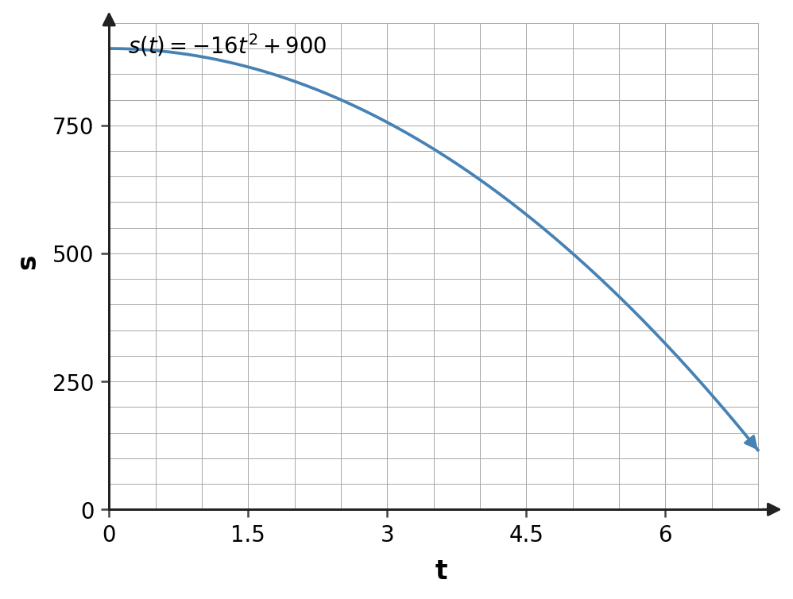
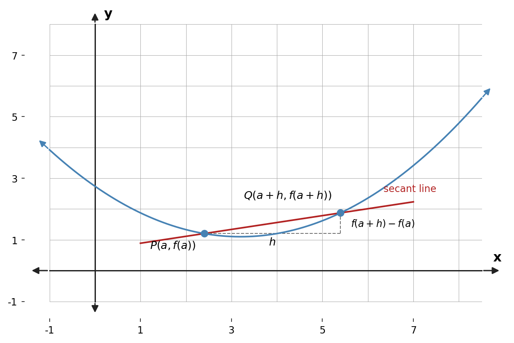

A tangent slope is the value approached by slopes of nearby secant lines.
Section Introduction
Secant slopes move toward a tangent slope
The slope of a line is constant, but the slope of a curve changes from point to point. To measure the slope of a curve at one point, we begin with something familiar: the slope through two points.
A secant line gives an average rate of change over an interval. As the second point moves closer to the point of interest, the interval shrinks and the secant slopes can approach one limiting value.
That limiting slope is the instantaneous rate of change. Algebraically, the same process appears in the difference quotient.
The interval shrinks toward zero; the denominator is never replaced by zero inside the difference quotient.
Vocabulary / Key Notation Preview
average rate of change · secant line · tangent line · difference quotient · instantaneous rate of change · normal line · vertical tangent
Sort the vocabulary. Write each vocabulary word in the column that best matches what you know right now. You may move a word later.
| Know for sure | Recognize | Don't know yet |
|---|---|---|
What's To Come
PREVIEW / DECOMPOSE. Use the connected parts to see where this section is headed.
Let $f(x)=x^2$. Fix the point $P=(2,4)$ and let $Q=(2+h,(2+h)^2)$ be a nearby point on the curve.
Part A
Write the slope of the secant line through $P$ and $Q$ in terms of $h$.
- Answer: The secant slope is $\displaystyle\frac{(2+h)^2-4}{h}$.
- Reasoning: Use the slope formula between $P=(2,4)$ and $Q=(2+h,(2+h)^2)$.
- Teaching move / listen for: Keep the geometric meaning visible before simplifying algebraically.
Part B
Simplify the secant-slope expression as far as possible.
- Answer: The expression simplifies to $4+h$.
- Reasoning: Expand the numerator: $4+4h+h^2-4=h(4+h)$, then cancel $h$ for $h\ne0$.
- Teaching move / listen for: Reinforce that $h$ is approaching zero, not equal to zero during cancellation.
Part C
What value does the simplified slope approach as $h\to0$?
- Answer: As $h\to0$, the secant slope approaches $4$.
- Reasoning: The simplified expression $4+h$ has limit $4$.
- Teaching move / listen for: Ask students to connect the limiting number to the changing secant lines.
Part D
What does that limiting value represent geometrically on the graph of $f$?
- Answer: The limiting value $4$ is the slope of the tangent line to $y=x^2$ at $(2,4)$—the instantaneous rate of change there.
- Reasoning: The tangent slope is defined as the limit of secant slopes.
- Teaching move / listen for: This is the bridge from limits into derivatives; name both the geometric and rate-of-change interpretations.
Example 1 · Average rate of change from a graph
Return to Wile E. Coyote falling from a 900-foot cliff. His height is modeled by
$$s(t)=-16t^2+900.$$
- Find the points on the graph corresponding to Wile E.'s position at $t=0$ and $t=5$ seconds.
- Draw the line through those points and find its slope. What does that value mean?
- Find Wile E.'s average velocity from $t=4$ to $t=5$ seconds. Show this graphically.
- Find his average velocity from $t=4.5$ to $t=5$ seconds. Show this graphically.
- Find his average velocity from $t=4.9$ to $t=5$ seconds. Show this graphically.
- What do you think is the graphical interpretation of the velocity at exactly $t=5$ seconds?
- Answer: At $t=0$, Wile E. is at $(0,900)$; at $t=5$, he is at $(5,500)$. The slope of that secant line is $-80$ ft/s. Average velocity from $4$ to $5$ is $-144$ ft/s; from $4.5$ to $5$ is $-152$ ft/s; from $4.9$ to $5$ is $-158.4$ ft/s. These secant slopes approach $-160$ ft/s, represented graphically by the tangent slope at $t=5$.
- Reasoning: For an interval $[a,5]$, the secant slope approaches the tangent slope as $a\to5$.
- Teaching move / listen for: Keep units attached to every slope and ask students what the negative sign means physically.
Example 2 · Slope of a secant line
For the curve shown, $P(a,f(a))$ is the point of tangency and $Q(a+h,f(a+h))$ is another point on the curve. Find the slope of the secant line through $P$ and $Q$.

- Answer: The secant slope is $\displaystyle\frac{f(a+h)-f(a)}{(a+h)-a}=\frac{f(a+h)-f(a)}{h}$.
- Reasoning: The horizontal change is exactly $h$.
- Teaching move / listen for: This generic form is the difference quotient students must recognize later in derivative notation.
Example 3 · Secant lines approaching a tangent line
How do we get closer and closer to the point of tangency? On the same diagram, draw at least three more secant lines, choosing a point closer to $P$ each time.
- Answer: Choose points $Q$ progressively closer to $P$ and draw the corresponding secant lines. Their slopes should visibly approach the slope of the tangent line at $P$.
- Reasoning: The changing secant line is the graphical version of letting $h\to0$.
- Teaching move / listen for: Ask students whether $Q$ ever has to equal $P$; the answer is no—the limit handles the approach.
The slope of the curve $y=f(x)$ at the point $P(a,f(a))$ is the number
provided the limit exists.
Example 4 · Vertical tangent lines
What types of graphs would have vertical tangent lines?
- Answer: Graphs with a vertical tangent have tangent lines parallel to the $y$-axis, so the secant slopes grow without bound in magnitude. Examples include $y=\sqrt[3]{x}$ at the origin or the left/right points of a circle.
- Reasoning: A vertical tangent corresponds to an infinite/undefined ordinary slope rather than a finite tangent slope.
- Teaching move / listen for: Distinguish a vertical tangent from a corner or cusp, where the two-sided derivative behavior may fail for a different reason.
Example 5 · Working with f(a+h)
For each function, find both $f(a)$ and $f(a+h)$.
- $\displaystyle f(x)=\frac1x$
- $\displaystyle f(x)=x^2-4x$
- $\displaystyle f(x)=\sqrt{4x+1}$
- Answer: For $f(x)=1/x$: $f(a)=1/a$ and $f(a+h)=1/(a+h)$. For $f(x)=x^2-4x$: $f(a)=a^2-4a$ and $f(a+h)=a^2+2ah+h^2-4a-4h$. For $f(x)=\sqrt{4x+1}$: $f(a)=\sqrt{4a+1}$ and $f(a+h)=\sqrt{4a+4h+1}$.
- Reasoning: Substitute the entire input expression $a+h$ everywhere $x$ appears.
- Teaching move / listen for: Watch for the common error of replacing only one occurrence of $x$ or failing to distribute through parentheses.
Example 6 · Slope of Wile E. Coyote’s position curve
Return to Example 1. Let
$$f(x)=-16x^2+900.$$Use the difference quotient and a limit to find the slope of the curve at $x=5$.
- Answer: The slope at $x=5$ is $\displaystyle\lim_{h\to0}\frac{f(5+h)-f(5)}{h}=-160$.
- Reasoning: Expanding $f(5+h)=-16(5+h)^2+900$ and simplifying the quotient gives $-160-16h$, whose limit is $-160$.
- Teaching move / listen for: Reconnect the exact limit result to the secant estimates in Example 1.
Example 7 · Tangent and normal lines
Let
$$f(x)=\frac1{x+1}.$$- Find the slope of the curve at $x=a$.
- Find the slope of the curve at $x=2$.
- Write the equation of the tangent line to the curve at $x=2$.
- Write the equation of the normal line to the curve at $x=2$.
- Answer: For $f(x)=\frac1{x+1}$, the slope at $x=a$ is $-\frac1{(a+1)^2}$. At $x=2$, the slope is $-\frac19$ and the point is $(2,\frac13)$. Tangent line: $y-\frac13=-\frac19(x-2)$. Normal line: $y-\frac13=9(x-2)$.
- Reasoning: The normal slope is the negative reciprocal of the nonzero tangent slope.
- Teaching move / listen for: Require point-slope form first; it keeps the geometry visible and reduces algebra errors.
AP Alignment Summary
Important numbering note: This textbook's Section 2.4 numbering is independent of the College Board AP unit/topic numbering.
| AP Topic | College Board Topic | How this section covers it |
|---|---|---|
| 2.1 | Defining Average and Instantaneous Rates of Change at a Point | Secant slopes, average velocity, shrinking intervals, tangent slope, and instantaneous velocity are developed graphically and analytically. |
| 2.2 | Defining the Derivative of a Function and Using Derivative Notation | Conceptual bridge/partial coverage: the difference quotient and tangent-slope limit are fully developed, but formal derivative notation is intentionally not yet the focus of these notes. |
This section transitions from College Board AP Unit 1 into AP Unit 2. Across textbook Sections 2.1–2.3, all AP Unit 1 topics 1.1–1.16 have now been addressed; Section 2.4 begins the AP differentiation sequence.
Unit-level checkpoint: Textbook Sections 2.1–2.3 collectively address the complete College Board AP Unit 1 topic sequence (1.1–1.16). Textbook Section 2.4 then begins College Board AP Unit 2.
Alignment reference: AP Calculus AB — AP Central and the AP Calculus AB and BC Course and Exam Description. College Board notes that the 2026–27 update contains clarifications but does not change course content.